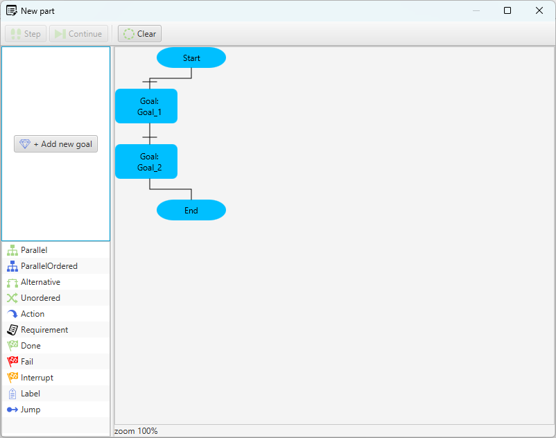
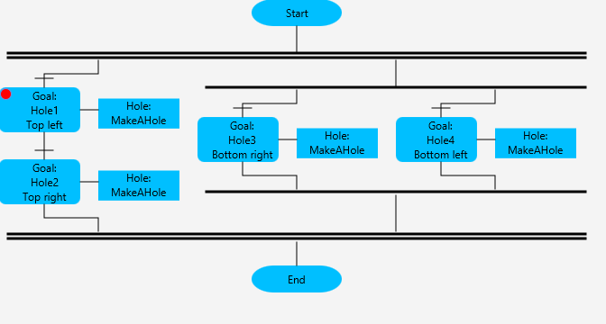
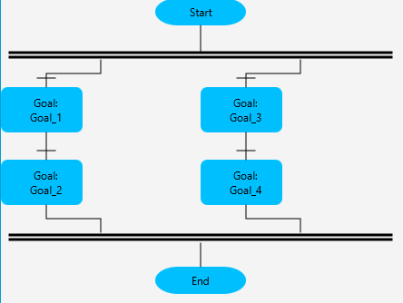
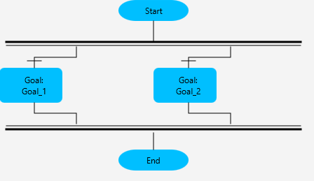
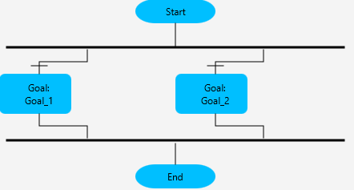

A goal represents a desired outcome that an agent aims to achieve. Each part agent maintains a goal chart that defines the overall objectives for that specific agent. In addition, goal charts may also be defined as reusable process plans that can be utilized by other agents when appropriate.
In practical terms, a goal often corresponds to a manufacturing objective, such as achieving a smooth surface finish or applying a specific colour (e.g., black). In this model, each part agent is responsible for driving the part toward a defined final state by executing its assigned goals.
A part is considered complete when all goals in its goal chart have been successfully achieved. At this point, the part has reached its intended final state and is ready for subsequent use or delivery.
Consider a part agent that aims at a painted metal component:
Goal: Achieve a black, high-gloss surface finish
Operation (Abstract task): Apply [black] surface coating
Skill: Spray painting [color]
Action: Position spray gun
Action: Activate [color]
Action: Execute spray pattern
Once the operation have been successfully completed, the Goal is fulfilled. For more information about the used structure see more process plan structure.
The Goal Chart represents an ordered sequence of Goals. Goals are executed from top to bottom according to their vertical order in the chart. When the final Goal in the sequence has completed successfully, the part agent declares the part ready.
This ordered sequence of Goals, together with its blocks for branching and execution, constitutes the Goal Chart.
To open the Goal Chart Editor, create a part agent in the modelling tree and double-click the agent. Alternatively, select the agent and, in the Property View, press the Edit button for Process Plan.
The editor is divided into the following areas:
(1) Goal List (top left): Displays available but unused Goals for the selected agent. The list is empty if no unused Goals exist.
(2) Building Blocks (bottom right): Contains the available blocks used to construct a goal chart.
(3) Goal Chart Canvas (right): Displays the active goal chart. Each goal chart always contains a predefined [start] block and [end] block that define the execution boundaries.
If the Goal List is empty, a new Goal can be created by clicking the + Add new goal button.
An unused Goal can be edited by double-clicking it in the Goal List. This opens the Goal editor, where properties such as:
and other configuration parameters can be defined.
Multiple Goals can be created simultaneously by right-clicking in the Goal List and selecting Add multiple goals.

The primary building blocks of a goal chart are the Goals. A Goal can be added by dragging it from the Goal List into the Goal Chart Canvas and dropping it onto an existing block or connection. Other building blocks can be added in the same way by dragging them from the Building Blocks list into the chart. The vertical order of blocks and Goals defines the execution sequence: the topmost block is executed first, followed by subsequent blocks in descending order until the sequence is complete. To remove a goal or a block from the chart right click on it and select remove.
The following building blocks are available:
A precondition is represented by a horizontal line placed before a block or Goal in the Goal Chart. A precondition is a logical expression that evaluates to true or false. It is implemented as a function in structured text that returns a Boolean value.
Double-click the precondition to view or modify its logic. If the precondition evaluates to false, execution of the corresponding block or Goal will wait until the expression becomes true. Once execution has started, the precondition is no longer evaluated. That is, if it later becomes false, the execution of the block or Goal will continue without interruption.
Although it is generally recommended to define the execution order by placing Goals in the desired sequence in the Goal Chart, execution order can also be controlled by combining parallel goals with preconditions. This allows Goals to be placed in parallel while still enforcing execution dependencies.
It is possible to add a breakpoint to most blocks in a Goal Chart.

A Parallel block executes all its branches concurrently and independently of each other. Each branch may have its own precondition. A branch starts execution only when its precondition evaluates to true. Once execution has started, the precondition is no longer evaluated; i.e., if it later becomes false, the branch continues executing. The Parallel block is considered complete when all parallel branches have finished successfully.
To add a sequence within a Parallel block:
(1) Drag a block or Goal and drop it on the Parallel lines in the editor.
(2) To add the next step in the sequence, drop a new block or Goal on top of the previous block in the sequence.
(3) To insert a block before an existing block, drop it on the line above the target block.
(4) To add a new branch, drop the block on the parallel lines again.

A Parallel Ordered block executes one branch at a time, based on branch preconditions.

A Unordered block contains a set of Goals that are all placed at the same hierarchical level and have no defined execution priority.
An Alternative block executes only one branch based on preconditions.

An Action block represents a single executable statement (or a small set of statements) written in Structured Text.
This Action writes the text "Executing an action" to the console when executed. An Action can utilize variables defined in the agent. Once the Action completes, execution continues with the next block in the Goal Chart, according to the defined sequence or branching logic.
A Requirement is similar to a Goal in that it specifies a desired state of the system. The key difference is that a Requirement automatically triggers the planner to find a solution to satisfy it. Requirements are typically conditions that must be fulfilled before a specific Goal can start.
A common example is the ATTACHED requirement, which states that a part must be attached to a specific interface before the sequence can continue. Example: To paint a part, it must first be attached to the paint fixture. The planner will then determine how the part can be moved and attached to the fixture automatically.
This approach is often more flexible than a fixed process plan, as the planner can explore multiple ways, more complex patterns and optimize the performance to satisfy the requirement. However, the modeling technique is more complex since all resources must be able to interact with the planner. You can read more about the planner in this example or in the planner chapter.
A Done block indicates that a plan or a sequence within a Goal Chart has been successfully completed.
It is a terminal block that marks the end of execution for a branch. Done will not end the execution of other branches in the Goal Chart.
A Fail block indicates that the Goal Chart has failed. It is a terminal block that marks the end of execution due to an error. When a Fail block is reached, the system considers the entire Goal Chart unsuccessful and the execution stops. Fail blocks are typically used in combination with preconditions, error handling, or validation checks to clearly define failure states.
An Interrupt block indicates that execution of a plan, branch, or sequence has been interrupted. It can be used to stop execution under specific conditions, such as resource unavailability or higher-priority tasks.
A Label block is used to name a specific location in a Goal Chart. Labels do not perform any actions and are not executed like other blocks. They serve as reference points for Jump blocks or for documentation purposes within the Goal Chart.
Each Label should have a unique name to allow unambiguous references.
A Jump block directs the execution flow to a specific Label elsewhere in the Goal Chart.
When a Jump block is executed, the sequence immediately continues from the target Label, bypassing any intervening blocks. Jumps can be used to implement loops, conditional branches, or dynamic execution paths within a Goal Chart. The target Label must exist in the same Goal Chart and branch, otherwise, execution may result in an error.